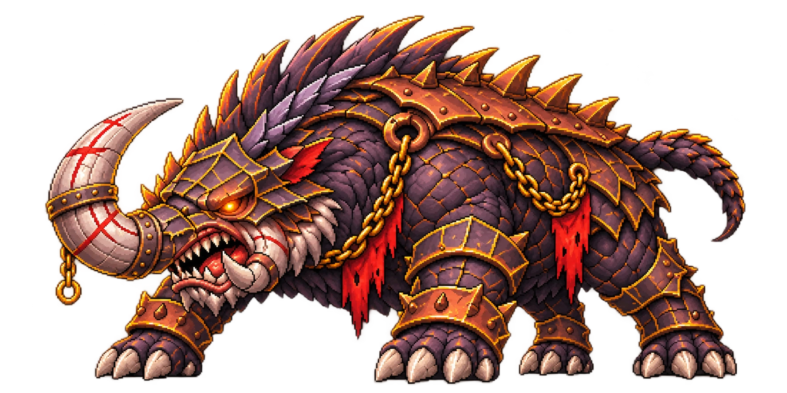
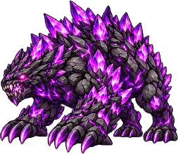
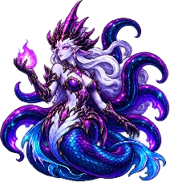
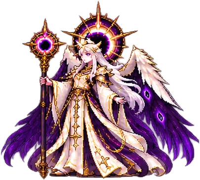

Olá, aventureiros! A v0.8.6 reúne um novo desafio coletivo, uma rodada de balanceamento e melhorias nas telas que vocês mais usam. O objetivo é simples: tornar cada escolha mais interessante e cada toque mais fluido.
Um inimigo. Todo o servidor.
Grondar desperta.
01 / NOVOEscolha sua formação, controle suas habilidades e contribua para derrubar um chefe com vida global compartilhada.

World Boss · GrondarO peso de
um mundo.
Cada tentativa conta.
O dano de todos se soma em um único objetivo.
50 milhõesde HP global
19h–22hhorário de São Paulo
2 tentativaspor jogador no evento
120 segundosde duração máxima por luta
- Seu jeito de jogar: formação no padrão do PvE e modos Automático, Manual e Misto disponíveis.
- Dano visível desde o início: o contador começa em zero e cresce durante a luta. Sair encerra a participação com o dano causado até aquele momento.
- Pressão crescente: Grondar recebe +5% de ataque a cada 10 segundos.
- Monte sua estratégia: de 1 a 5 heróis por tentativa. Heróis usados não podem ser reutilizados na outra tentativa do evento.
- Contribua e receba: ranking de dano e recompensas pelo correio no encerramento, às 22h. Uma conquista por derrotar Grondar concede +5% de gold.
Escolhas com mais identidade
Balanceamento de heróis
02 / HERÓISDano, suporte e invocações receberam atenção. Use os filtros para encontrar um personagem ou um tipo de mudança.
“Queremos que cada herói tenha um papel claro, com habilidades que façam diferença no combate.”
7 heróis nesta atualização
Mais clareza no dano mágico, com um limite melhor definido para a Ressonância.
- Sobrecarga Mística: corrigida para aumentar o ataque mágico efetivo a cada habilidade ativa usada durante a fase.
- Ressonância Arcana: dano verdadeiro por crítico no nível 12: 975→700. Nova escala de 150 no nível 1, com +50 por nível.
- Críticos da Ressonância: o dano adicional pode causar seu próprio crítico e ignora defesas. Ele não aciona outra Ressonância, evitando uma cadeia infinita.
- Chuva de Cometas: a sequência de cometas só reinicia ao trocar de fase; mudar de alvo não a reinicia.
- Queimadura: parcela de HP máximo por segundo: 0,40375%→0,47375%. O limite de MATK acompanha a nova progressão em todos os níveis.
- Textos: descrições e prévias de nível corrigidas para refletir os efeitos reais.
Veneno mais relevante e mais espaço para explorar sua velocidade.
- Veneno: dano por segundo definido em 20% do PATK. O alvo também perde 15% de velocidade de ataque enquanto estiver envenenado.
- Marca do Caçador: enquanto ativa, Lyn causa +10% de dano direto adicional ao atingir alvos envenenados.
- Passo da Floresta: pode ultrapassar o limite normal de intervalo básico de 0,5s, chegando ao mínimo específico de 0,3s durante o efeito.
- Chuva de Flechas: as flechas também aplicam veneno ao atingir os inimigos.
Um trio mais resistente, com papéis e posicionamentos mais claros.
- Servos: +10% de HP e +10% de dano.
- Despertar dos Condenados: se os três servos já estiverem vivos, usar a habilidade cura cada um em 10% do próprio HP máximo, em todos os níveis.
- Posicionamento e IA: Bastião atua na frente, Executor na linha intermediária e Arauto na retaguarda. Ajustes de orientação e atualização visual reduzem trabalho repetido na apresentação.
Uma ativação decisiva para retomar o controle do combate.
- Vontade Inquebrável: ao ativar, remove efeitos de controle classificados e concede imunidade a controle de grupo durante sua janela, incluindo stun e silêncio.
- Recargas: todas as habilidades recebem um reset no momento da ativação.
A energia da tempestade agora protege o grupo.
- Coração da Tempestade: a energia acumulada passa a gerar escudo, em vez de devolver dano. O total é dividido igualmente entre os heróis vivos, incluindo Ceryndra e sem incluir invocações.
- Duração do escudo: até ser consumido ou a fase terminar. Exemplo: 10.000 de energia com cinco heróis vivos gera 2.000 de escudo para cada um.
- Bênção dos Fragmentos: cooldown: 14,4s→10s.
- Ataque básico: coeficiente de dano: 100%→140%.
O calor da forja também fica nos inimigos.
- Ruptura da Forja e Torvelinho da Forja: passam a aplicar queimadura aos alvos atingidos.
- Queimadura de Dorrik: dura 4s, reduz a cura recebida em 50% e causa por segundo o menor valor entre 0,40375% do HP máximo do alvo e 9,6% do PATK de Dorrik. Não causa críticos.
Dano e sustentação caminham juntos na Harmonia Final.
- Harmonia Final: dano base de 200% do MATK, com +10 pontos percentuais por nível. No nível 12, o coeficiente chega a 310%.
- Cura: cada aliado vivo recebe cura equivalente a 10% do dano efetivamente retirado do HP dos inimigos, incluindo invocações aliadas vivas. Dano excedente sobre alvos derrotados não aumenta a cura.
Nenhum herói encontrado. Tente outro nome ou filtro.
Entenda os efeitos
Veneno & queimadura
03 / COMBATEVeneno
Lyn: causa 20% do PATK por segundo. O veneno pode ser purificado e não causa críticos.
Nova penalidade: qualquer alvo envenenado perde 15% de velocidade de ataque. A penalidade também vale para o veneno da Nymeris, não acumula com múltiplos venenos e sai quando o último efeito é removido.
Queimadura
Mira: causa 0,47375% do HP máximo por segundo, respeitando o limite de MATK da habilidade. O limite cresce por nível: 47,375% no nível 1, cerca de 99,737% no 10 e 111,373% no 12.
A queimadura reduz a cura recebida em 50%. A de Mira pode causar críticos. A de Dorrik mantém seus próprios valores e duração.
PATK = ataque físico. MATK = ataque mágico. No caso da Mira, vale o menor valor entre a parcela de HP e o limite de MATK; as duas parcelas não são somadas. O aumento da Mira não altera a queimadura dos bosses.
O inverno não dá trégua
Bosses & progressão
04 / MUNDOSOs bosses do Mundo 4 trocam parte da vida e do ataque por uma cadência mais agressiva. Há menos espera entre habilidades e mais decisões ao longo da luta.
Ajuste ↔Fenrir
HP final 1.150.0001.450.000 → 1.150.000
PATK 11.850MATK 10.850
−1.150 em cada ataque.
Intervalo básico:
1,894s→1,321s
Ao cair abaixo de 50% de HP, ganha +25% de velocidade de ataque até o fim do combate, mesmo se recuperar vida. O intervalo passa a 1,0568s sem outros efeitos.
Ajuste ↔Sacerdotisa de Cristal
HP final 1.450.0001.850.000 → 1.450.000
PATK 11.350MATK 15.350
−1.150 em cada ataque.
Intervalo básico:
2,020s→1,650s
O Véu concede buffs e escudo apenas à própria Sacerdotisa. Corrigida a aplicação indevida em outras unidades.
Ajuste ↔Rei do Inverno
HP final 1.900.0002.400.000 → 1.900.000
PATK 17.350MATK 15.350
−1.150 em cada ataque.
Intervalo básico:
2,210s→1,340s
Vontade Inquebrável: duração de 5s→9s. Mantém seu bônus de velocidade; durante o efeito, o intervalo básico chega a 0,670s sem outros modificadores.
Recargas no último ajuste de balanceamento| Boss | Habilidade | Antes | Agora |
|---|
| Fenrir | Caçada | 12,8s | 7s |
| Fenrir | Uivo | 16,8s | 10s |
| Fenrir | Garras | 9,6s | 4s |
| Sacerdotisa | Espelhos | 16s | 10s |
| Sacerdotisa | Julgamento | 10,4s | 6s |
| Sacerdotisa | Rosácea | 14,4s | 8s |
| Sacerdotisa | Véu | 14,4s | 10s |
| Rei do Inverno | Decreto | 17,6s | 12s |
| Rei do Inverno | Correntes | 14,4s | 10s |
| Rei do Inverno | Bastião | 22,4s | 14s |
Comparações acima são com a revisão anterior da preparação v0.8.6. As recargas configuradas contam após a animação e podem receber redução de cooldown. Os intervalos básicos são valores efetivos sem outros buffs ou debuffs.
Mobs dos Mundos 4 e 5: −200 de ataque físico base e −200 de ataque mágico base, com mínimo zero. A redução não se aplica aos bosses. O crescimento das fases é calculado sobre os novos valores base.
Mundo 5: a ameaça continua
A progressão dos chefes do M5 foi reforçada. O Soberano da fase 700 foi preservado neste último ajuste.

Beemote Cristalino2.592.000 HP

Rainha do Abismo2.799.360 HP

Serafiel, o Falso Misericordioso3.023.308,8 HP
Menos obstáculos entre os combates
Arena, runas & navegação
05 / QUALIDADE DE VIDAUma Arena mais acessível
- Ícone próprio de PvP na barra principal, com rolagem para os dois lados por toque ou arraste.
- As contas existentes podem participar como adversárias usando o time principal real como defesa inicial, até a escolha de uma defesa manual.
- Defesas podem usar times parciais reais de 1 a 5 heróis. O ataque ranqueado continua exigindo 5.
- Toque no retrato do ranking para abrir o perfil. Rolagem por toque corrigida na Arena Shop.
Runas sem interrupções
- Equipar, remover, refinar e evoluir com confirmação discreta na própria tela.
- Operações normais da Arena não abrem o popup de “conectando ao servidor”.
- Materiais e quantidades necessários ficam mais visíveis no refino.
- Level Up e recuperação de operações pendentes foram corrigidos para evitar que um toque fique preso aguardando confirmação.
Menos spam. Mais conquista.
Títulos com propósito
06 / PROGRESSÃO560 →226níveis ativos
em 64 séries
- Especialização de verdade: títulos focados em ataque, defesa, drop e combinações de ataque, defesa e HP. A força acompanha a progressão dos mundos.
- Séries progressivas: 52 séries chegam ao nível IV ou além. A mesma carta mostra a evolução conquistada, o próximo objetivo e o progresso que falta.
- Histórico preservado: conquistas anteriores são convertidas, mantendo o progresso e o registro do que foi conquistado.
- Mais fácil de encontrar: títulos liberados aparecem primeiro, ordenados do mais forte ao mais fraco. Os bloqueados ficam abaixo.
- PvP também conta: títulos exclusivos por conquistas na Arena, com bônus restritos ao PvP e presença no filtro “Todos os Mundos”.
Uma experiência mais leve
Menus, combate & conexão
07 / OTIMIZAÇÃOA v0.8.6 reduz trabalho repetido ao navegar entre telas e ao sincronizar o progresso. Inventário, abas, ranking, Arena e apresentação do replay receberam ajustes.
- As abas do inventário reaproveitam sua apresentação e os recursos já carregados, reduzindo reconstruções ao alternar.
- Consultas repetidas de ranking são agrupadas e os resultados recentes são reaproveitados.
- Saves inalterados deixam de gerar novos envios. Mudanças rápidas podem ser agrupadas, mantendo confirmação para operações importantes.
- O World Boss recebe trechos de combate em vez de baixar repetidamente a batalha inteira.
- Processamento e atualização visual do PvP foram otimizados para reduzir trabalho duplicado.
Medição em cenários controladosMenos tráfego para salvar progresso.
299 → 12snapshots por hora de campanha
até 98,61%menos dados nos cenários de saves medidos
Esses números descrevem testes controlados do fluxo de saves, não uma redução garantida de todo o consumo de internet. O resultado e o FPS variam conforme o aparelho e a situação de jogo.
Preparados para a próxima versão
O instalador entra em cena.
08 / ATUALIZAÇÕESA v0.8.6 prepara o fluxo para que as próximas atualizações sejam iniciadas dentro do próprio jogo, sem precisar procurar cada novo APK no site.
v0.8.6 → futuras versõesDo aviso à instalação,
pelo próprio app.
O reconhecimento do instalador Android foi corrigido e o componente nativo acompanha a versão preparada.
Instale a v0.8.6Baixe o APK v0.8.6 na Release oficial e instale por cima da versão atual, sem desinstalar.
Receba o próximo avisoDepois que uma nova versão for publicada, o jogo poderá mostrar sua disponibilidade.
Confirme a instalaçãoInicie pelo app e siga a confirmação ou permissão solicitada pelo Android.
Vou precisar desinstalar o jogo?
Não. Instale a atualização sobre a versão atual para preservar os dados. As versões oficiais precisam manter o mesmo aplicativo e assinatura.
A atualização será instalada sem eu tocar em nada?
O jogo pode iniciar o download e abrir o instalador, mas o Android pode pedir permissão para instalar por essa origem e uma confirmação do usuário.
A v0.8.7 já está disponível?
Não há uma v0.8.7 anunciada para download nestas notas. A seção explica o fluxo preparado para quando a próxima versão for publicada.
Obrigado por caminhar com a gente
Um presente para sua jornada.
09 / CORREIOPresente de atualização · v0.8.6Abra seu correio.
Uma carta foi enviada às contas existentes para comemorar a atualização e ajudar na fabricação dos próximos equipamentos.
2.000.000de gold
20 de cada7 materiais de bosses M1–M3
“Obrigado por atualizar para a v0.8.6! Para comemorar, um pequeno presente. Espero que ajude na sua jornada.”
Quais materiais estão no presente?
- Cristal da Corrupção
- Minério do Cadinho
- Coroa Micelial
- Cerne Ancestral
- Escama do Dragão de Fogo
- Insígnia de Malkor
- Esporo do Véu
Apenas ingredientes usados nas receitas atuais de craft. Não inclui itens de missão, desbloqueios da Forja ou selos de ascensão.
O correio também passa a permitir entregas individuais da administração por nickname. Os presentes são resgatados com confirmação no servidor.
Nos vemos na Arena.
E diante de Grondar.
Notas preparadas a partir dos dados finais da v0.8.6. Organização editorial inspirada nos patch notes do TFT; artes e conteúdo de Astraryx Idle. As comparações de ajustes finais não representam, em todos os casos, o balanceamento publicado na v0.8.5.